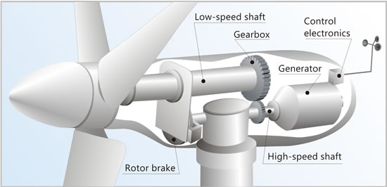

Rotor:
The Blades and Hub together form the rotor.
Low-speed Shaft
The low-speed shaft is a long cylindrical pole usually built from forged or cast iron. It spins at the same rate as the blades around the rotor.
Gearbox:
It connects the low-speed shaft to the high-speed shaft and increases the rotational speeds. The gearbox helps convert the lower speed into a higher one to produce the maximum amount of energy output from the generator.
Generator:
The generator usually requires a relatively high rotational speed to produce electricity.The generator induces a current by spinning a coil of wire inside a magnetic field, or by spinning a magnet inside a coil of wire. As this happens, a potential difference is produced between the ends of the coil, which causes a current to flow.
Anemometer:
An instrument for measuring the speed of the wind, wind pressure or any current of gas. The most common type of anemometer has three or four cups attached to horizontal arms. The arms are attached to a vertical rod. As the wind blows, the cups rotate, making the rod spin. The stronger the wind blows, the faster the rod spins. The anemometer counts the number of rotations, or turns, which is used to calculate wind speed.
Controller:
The controller increases the power production and limits the loads on the structural parts in order to optimize the functionality of a wind turbine. The control system consists of a number of computers which continuously monitor the condition of the wind turbine and collect statistics of operation from sensors such as the anemometer. The controller sends a responding signal to the yawing mechanism to allow the maximum amount of rotation of the blades under the surrounding conditions.
Tower:
Made from tubular steel, concrete, or steel lattice. The tower supports the structure of the turbine and as wind speed increases with height, taller towers enable turbines to capture more energy and generate more electricity.